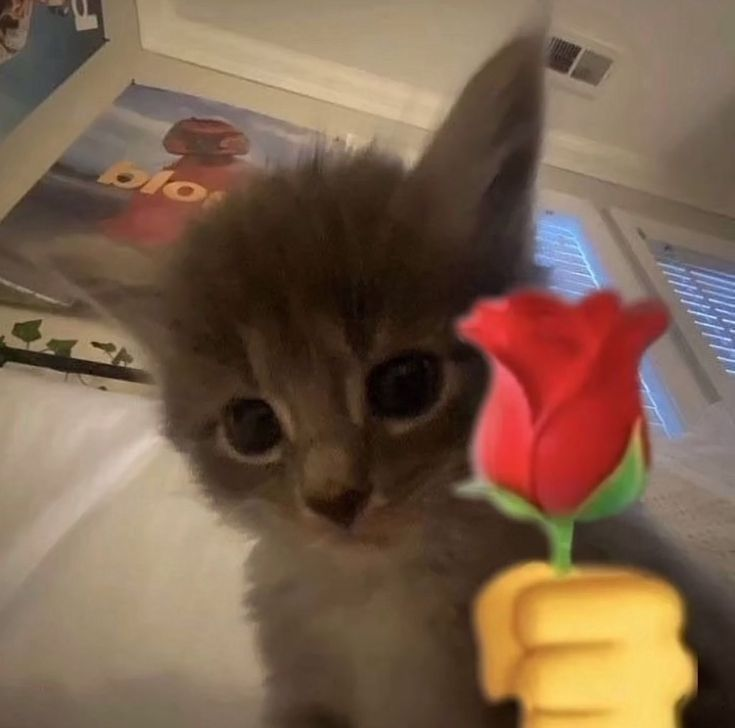

click me (turn up your volume :))
wow, six months na pala tayo. mas tumagal pa tayo kaysa sa iba ahh HAHAHAHAH
jokes aside, i just wanna say that (eto nanaman tayo), thank you talaga sa lahat,
sa lambingan, kulitan, assurance, for everything you do for me, and for being the best gf ive ever had <3
and sorry talaga if minsan nag-aaway tayo dahil sakin, normal lang naman yun sa isang relationship diba?
also, dont ever think na magsasawa ako sayo, why would i get tired of you?
yan lang masasabi ko heheh, always take care of yourself ha??
wag ka magpapalipas ng gutom tsaka matulog ka sa tamang oras(pagsasabihan parin kita kahit di ka sumusunod HAHAHAH),
im always here if you need something ha?? i loveee you sooo much luv, mwaaaaa <33
again, happy 6th monthsary!!!
- much love, marth
sana na appreciate mo effort ko dito hehe, btw sorry if natakot kitaðŸ˜